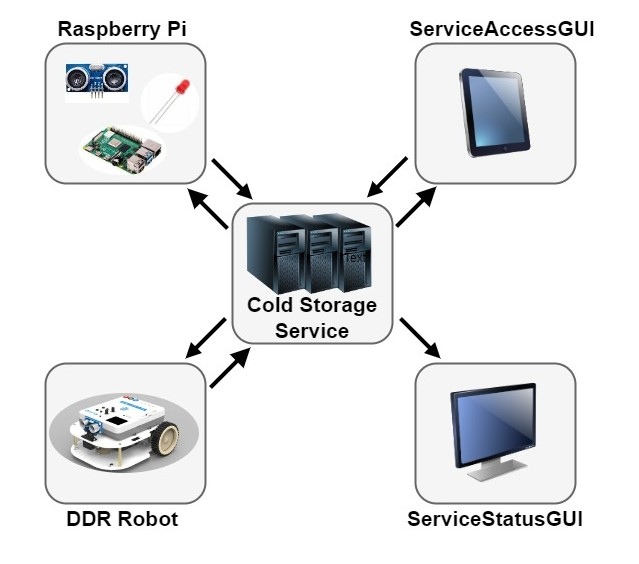

Introduction
Lo Sprint0 si concentra sull'analisi dei requisiti forniti dal cliente in modo tale da delineare in modo generale la struttura del sistema richiesto. Per fare ciò in seguito vengono riportate le considerazioni e chiarimenti avute durante l'analisi del Temafinale23.Una volta definita senza ambiguità la richiesta del committente si è delineata tramite dei macro-componenti la struttura complessiva. Questa visione torna utile per intuire la complessità e distribuire il lavoro in modo incrementale sotto forma di Sprint. DA RIGUARDARE: Il nostro team deve progettare e sviluppare un sistema software per , come descritto nel tema finale del 2022. Lo Sprint0 si concentra sull'analisi dei requisiti forniti dal cliente. Il nostro compito è comprenderli appieno, chiarire dubbi e incertezze, in modo che tutti (i membri del team e il cliente/proprietario del prodotto) concordino sul loro significato. In particolare, lo Sprint0 ha i seguenti obiettivi
- Formalizzare i requisiti per renderli comprensibili dalla macchina;
- Realizzare un modello di panoramica generale del sistema, suddiviso per nodi computazionali;
- Stilare uno schema di interazione primitivo iniziale;
- Fornire alcuni piani di test eseguibili, che serviranno per mostrare al cliente il comportamento principale del sistema, al fine di discutere la correttezza e eventuali problemi/differenze.
Requirements
Descrizione requirements a questa
pagina
Goals dello sprint 0 :
- Identificare i componenti principali del servizio ColdStorageService
- Formulare un modello di interazione dei componenti individuati
- Sviluppare un prototipo su base non distribuita
Requirement analysis
Lo scopo del progetto finale è quello di gestire un Cold Storage Service.Chiarimenti del committente
L'interazione con il committente ha permesso di chiarire alcuni aspetti del progetto:- Il conducente del camion è un operatore umano esterno al sistema;
- Il camion appena arrivato deve essere scaricato il prima possibile;
- Il messaggio inviato dal conducente del camion tramite un smart device è invece parte del sistema;
- Quando il Cold Room container è pieno, non bisogna scaricare i camion in arrivo;
- ColdStorageService potrebbe ricevere una nuova richiesta mentre sta ancora elaborando l'azione di deposito della precedente;
- Il robot ha una massima capacità di peso che può trasportare, se il carico del camion supera quel valore occorre fare più giri;
- I percorsi effettuati dal robot non devono essere necessariamente ottimali, ma non devono essere eccessivamente lunghi;
- Le posizioni del robot possono essere rappresentate con un sistema di cordinate oppure con indicazioni qualitative, come "at INDOOR", "at HOME" e "at Cold Room";
- La stanza presa in considerazione presenta ostacoli statici, le cui coordinate sono conosciute;
- Le posizioni degli elementi: INDOOR, HOME e Cold Room, sono conosciute a priori;
- Il service manager è un operatore umano esterno al sistema;
- I messaggi inviati allo smart device del service manager che consentono la supervisione del sistema sono invece parte del sistema;
- Il sonar e il Led NON sono sul trolley, bensì su un Rasberry Pi separato;
- Il trolley si deve fermare "il prima possibile", quando il sonar trasmette un alarm;
- La ServiceAccessGui è unica e condivisa da tutti i conducenti del camion;
- Il DDR Robot e il Transport Trolley non sono la stessa cosa;
Dizionario
| Termini | Descrizioni |
|---|---|
| ColdStorageService | Il ColdStorageService è un Sistema Distribuito e corrisponde all'entità del sistema che coordina il comportamento degli altri componenti implementando la business-logic dell'applicazione. Definisce il prodotto finale che soddisfa tutti i requisiti forniti dal committente. |
| INDOOR | Posizione identificata su una parete della Service Area adibita allo scambio di alimenti dal Fridge Truck al Transport Trolley. |
| PORT | Posizione identificata su una faccia della ColdRoom utilizzata per scaricare gli alimenti dal Transport Trolley. |
| Alimenti | Contenuto del carico che il Transport Trolley gestisce. |
| ColdRoom | Una stanza o un ambiente appositamente progettato e controllato termicamente per conservare e mantenere la temperatura dei prodotti alimentari a bassa temperatura. Costituisce la destinazione del materiale ritirato dal transport trolley al punto di INDOOR. |
| MAXW | Quantità massima di alimenti espressa in Kg che la ColdRoom è in grado di immagazzinare. |
| Service area | Superficie piatta, rettangolare, con ostacoli fissi e circoscritta da 4 pareti. Definisce la
zona di manovra del transport trolley ed è inoltre composta da:
|
| DDR robot | Differential Drive Robot (DDR), robot fisico fornito dal committente. È in grado di muoversi all'interno della Service Area grazie al software BasicRobot, anch'esso fornito dal committente. |
| Transport Trolley | Un robot virtuale a forma di quadrato, con lato di lunghezza RD, che è inizialmente posizionato nella sua posizione HOME e svolge un'azione di deposito. Può muoversi in avanti, indietro, fermarsi e ruotare di 90°. Il Transport Trolley è un attuatore di comando: può utilizzare il robot DDR per eseguire azioni in un ambiente reale. |
| RD | Lunghezza di ogni lato del Transport Trolley. |
| HOME | Posizione identificata sul pavimento della Service Area che identifica la zona dove il robot risiede alla partenza. |
| Azione di deposito | Sequenza di azioni del Transport Trolley che vengono eseguite ogni volta che un Fridge truck è
pronto per scaricare il carico:
|
| Fridge Truck | Entità generica esterna al sistema che consente di scaricare una quantità pari a FW Kg di alimenti. |
| Conducente del Fridge Truck | Entità esterna al sistema definita come essere umano alla guida del Fridge truck. |
| Carico | Qunatità in kg di alimenti che viene depositato dal Fridge Truck presso l'INDOOR. |
| ServiceAcessGUI | Interfaccia grafica utilizzata dai conducenti del Fridge Truck per interagire con il ColdStorageService al fine di scaricare il carico. |
| FW | Peso del carico espresso in Kg. |
| Ticket | Identificatore univoco della richiesta del conducente del Fridge Truck al ColdStorageService per consentire lo scarico del carico. |
| TICKETTIME | Tempo di validità del ticket, espresso in secondi. |
| ServiceStatusGUI | Interfaccia grafica utilizzata dal Service-manager per supervisionare lo Stato della Service Area. |
| Service-manager | Entità esterna al sistema, definita come essere umano che svolge il compito di monitorare lo Stato della Service Area attraverso la ServiceStatusGUI. |
| Stato della Service Area | Informazioni sul sistema ad un preciso istante di tempo, che includono:
|
| Sonar | Componente fisico fornito insieme al suo software dal committente. È un sensore in grado di rilevare la distanza utilizzando gli ultrasuoni. |
| Led | Componente fisico fornito insieme al suo software dal committente. È un particolare diodo in grado di emettere luce. |
| RaspberryPi | Single-board computer in particolare un Rasberry Pi 2 Model B. (Link: https://www.raspberrypi.org/). |
| Stato del Transport Trolley | Informazione riguardante l'azione svolta dal Transport Trolley, visibile anche grazie al Led. Può essere:
|
| DLIMT | Distanza limite misurata dal Sonar. È usata per fermare il Transport Trolley. |
| Warining Device | Componente astratto che utilizza il LED (attraverso il software fornito dal cliente) e sarà installato su un Raspberry Pi. Fornirà informazioni sullo stato attuale del Transport Trolley. |
| Alarm Device | Componente astratto che utilizza il Sonar (attraverso il software fornito dal cliente) e sarà installato su un Raspberry Pi. Quando misura una distanza inferiore a un valore prefissato DLIMT, il carrello di trasporto deve essere fermato. Verrà ripreso quando il Sonar rileva nuovamente una distanza superiore a DLIMT. |
| MINT | Tempo espresso in millisecondi che identifica l'intervallo minimo che può intercorrere tra due stop consecutivi del Transport Trolley |
| Termine | Soggetto | Descrizione |
|---|---|---|
| Accendere | Led | Accensione del Led che emette luce. |
| Spegnere | Led | Spegnimento del Led che non emette luce. |
| Lampeggiare | Led | Il Led si accende e spegne rapidamente in sequenza. |
| Misurare la distanza | Sonar | Il Sonar tramite ultrasuoni rileva la distanza che intercorre tra il sonar stesso ed un ostacolo. |
| Essere pronto | Transport Trolley | Il Transport Trolley è in condizioni di servire una nuova operazione di scarico. |
| Essere in movimento | Transport Trolley | Il Transport Trolley si sta muovendo all'interno della Service Area, si considera in movimento anche quando è fermo ma sta svolgendo una azione. Durante questa fase devono essere soddisfatti gli Alarm requirements. |
| Terminare l'azione di scarico | Transport Trolley | Il Transport Trolley ha completato una azione di scarico ed è pronto per gestire una nuova richiesta se presente, altrimenti ritorna in HOME. |
| Avviare il sistema | ColdStorageService | Viene avviato il software del sistema ed il Transport Trolley risulta posizionato in HOME. |
| Fermare l'attività | Sonar | Il Transport Trolley, durante lo spostamento in avanti o all'indietro, può essere fermato a causa del dispositivo di allarme. Mentre il Transport Trolley è fermo, non può muoversi fino a quando non si verifica un messaggio di ripresa. |
| Riattivare l'attività | Sonar | Il Transport Trolley riprende l'azione di scarico, riprendendo dal momento esatto in cui si era fermato. |
| Raccogliere il carico | Transport Trolley | Il Transport Trolley si trova in INDOOR e prende il carico impiegandoci il tempo necessario ed avendo cura di non superare la sua capacità massima di trasporto. |
| Depositare il carico | Transport Trolley | Il Transport Trolley si trova in PORT della ColdRoom e scarica il carico impiegandoci il tempo necessario. |
| Fare un'azione di carico-scarico | Transport Trolley | Il task effettuato dal Transport Trolley consiste di 3 azioni:
|
| Inviare una richiesta di storage | ServiceAccessGui | Il conducente del Fridge Truck si avvicina all'area INDOOR del servizio e chiede al sistema ColdStorageService (tramite un dispositivo intelligente) se può depositare un carico di FW kg./td> |
| Inviare una risposta di storage | ColdStorageService | Azione che si verifica quando il sistema riceve una richiesta di storage. Il ColdStorageService risponde con una risposta che può essere:
|
| Inviare il Ticket | ServiceAccessGui | Il conducente del Fridge Truck invia il proprio Ticket al sistema. |
| Invio charge taken | ColdStorageService | Il sistema comunica al conducente del Fridge Truck che il carico è stato correttamente ritirato. |
Service Area
Data la descrizione della stanza e l'immagine fornita dal committente, si è deciso di modellare la Service Area come un rettangolo, circoscrtitto da 4 mura, contentente due ostacoli fissi di cui uno è la Cold Room.
All'avvio il Transport Trolley si trova in posizione Home, ovvero sopra l'area Home. Il Transport Trolley è da considerarsi "at INDOOR" o "at Cold Room" quando si trova rispettivamente vicino al muro INDOOR o alla porta della Cold Room.
Sistema
Dall'analisi del TemaFinale23 fornita dal committente, è possibile effettuare una bozza della struttura del sistema, il quale presenterà 5 nodi computazionali:- Rasberry Pi
- ServiceAccessGui
- ServiceStatusGui
- DDR Robot
- ColdStorageService

Si evince dunque che tutti i componenti evidenziati comunicano tra loro in maniera bidirezionale, all'infuori della ServiceStatusGui che si limita a ricevere informazioni dal sistema.
Considerando la struttura appena effettuata è possibile raggruppare i requisiti del progetto in 3 macro-componenti, ordinati per priorità:
Dall'analisi del TemaFinale23 fornita dal committente, si evince che il sistema presenterà 5 macro-componenti:
- Il componente ColdStorageService (requisiti )
- Rasberry Pi
In questa analisi dei requisiti si concentrerà l'attenzione su i seguenti componenti,
individuati dai requisiti forniti dal committente:
- ColdStorageService
- Service area
- ColdRoom
- Transport trolley
- DDR Robot
- Camion refrigerato
Problem analysis
Si è deciso di modellare l'interazione dei componenti specificato tramite il modello ad attori QAK,
gli attori identificati
Test plans
Project
Testing
Deployment
Maintenance
By Riccardo Barbieri email: riccardo.barbieri11@studio.unibo.it,
 GIT repo: https://github.com/RiccardBarbieri/BarbieriRiccardoIss23
GIT repo: https://github.com/RiccardBarbieri/BarbieriRiccardoIss23
GIT repo: https://github.com/RiccardBarbieri/BarbieriRiccardoIss23